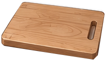
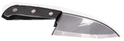
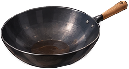
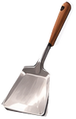
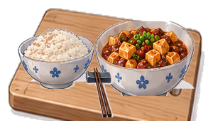

WASD / 方向鍵移動 · Shift 跑步 · E 互動
診間 CLINIC
CLINIC EMR醫師桌
病人椅
印表機
洗手台
過渡／備料 PREP
冰箱
不鏽鋼推車
料理處方機
後廚 KITCHEN
備料檯
香料架
炒鍋爐台
飯鍋
走到物件旁按 E 互動
任務進度與探索紀錄
目前階段：1. 診間問診
- 1. 走到病人椅按 E 問診
- 2. 走到醫師桌或處方機開單
- 3. 走到冰箱取出料理食材
- 4. 備料檯切配豆腐與辛香料
- 5. 分批下料、翻炒並等待燜煮
- 6. 燜煮完成後盛盤裝入瓷碗
- 7. 端餐回診間送餐給病人
- 8. 病人品嚐第一口與評分
尚未互動
階段 1/8：前往診間病人椅進行問診
【前置任務未完成】請先完成診間問診 (1)、開單 (2) 與冰箱取材 (3)！
精準加分自由練習0 COMBO
接單前可選擇晚班挑戰
備料 PREP
未在備料檯 (需靠近)



砧板空著
點選食材放上砧板切配
○ 豆腐切丁
○ 絞肉分切
○ 豆瓣舀取
○ 蒜瓣切末
○ 青蔥切花
炒鍋 WOK
未在爐台 (需靠近)




空鍋
靠近爐台開火熱鍋
處方訂單
微辣
要青蔥
正常飯
附味噌湯
配飯・裝盤 SERVE

青花瓷碗麻婆豆腐 × 越光米飯
已盛入托盤，請點擊送餐按鈕端回診間
料理紀錄
- 等待開始
【設定聲明】麻婆豆腐為虛構遊戲舒壓料理設定，提供感官撫慰與心理放鬆，非臨床醫療處方，不具戒菸或戒斷醫療療效。
CLINIC KITCHEN · SHIFT門診暫停